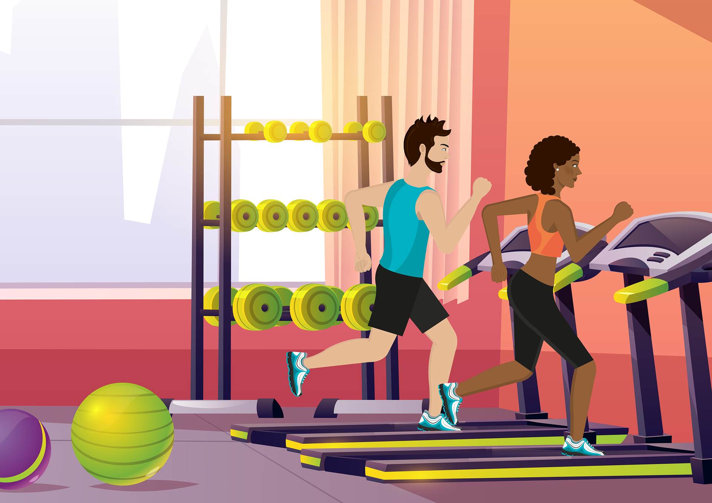

지금 당신의 체력수준을 확인해보세요!
삼성 혹은 애플 운동앱을 켜고 12분 동안 달린 거리를 측정해보세요.
달린 거리를 입력하고 결과를 확인하세요.
연령, 성별 대비 체력 수준을 확인할 수 있어요.
왜 심폐체력인가?
바디프로필 몸매보다
3대 운동 무게보다
더 중요한 심폐체력
최대산소섭취량을 향상 시키자!
심폐체력 지표로 사용되는 '최대산소섭취량'
건강상태를 예측하는 중요한 지표입니다.
최대산소섭취량이 낮으면
심혈관질환 위험 증가
대사질환 위험 증가
최대산소섭취량이 향상되면
심혈관질환 위험 감소
대사질환 위험 감소
12분 달리기
12분 달리기 검사는 최대산소섭취량을 예측할 수 있어요!
💡 12분 검사는 12분 안에 최대한 먼 거리를 이동하는 것입니다.